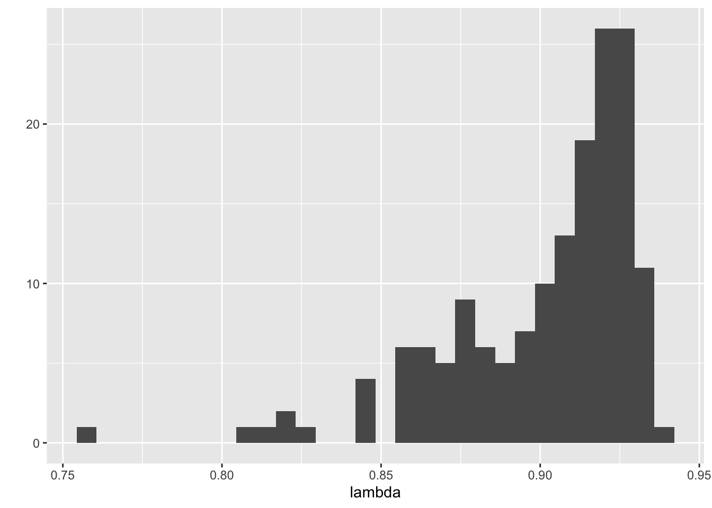
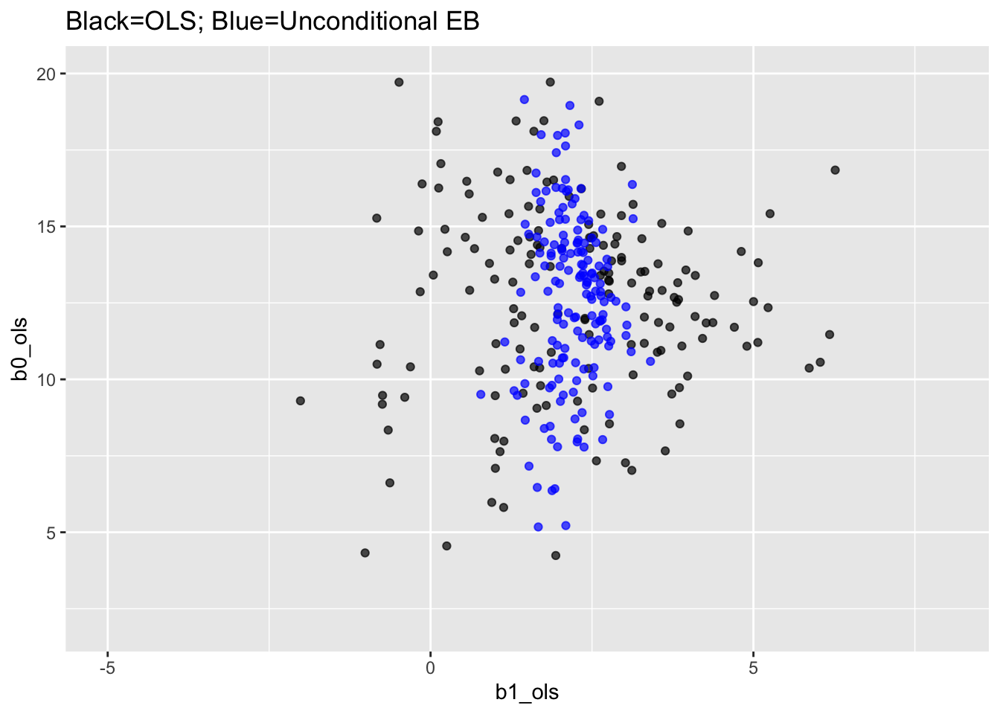
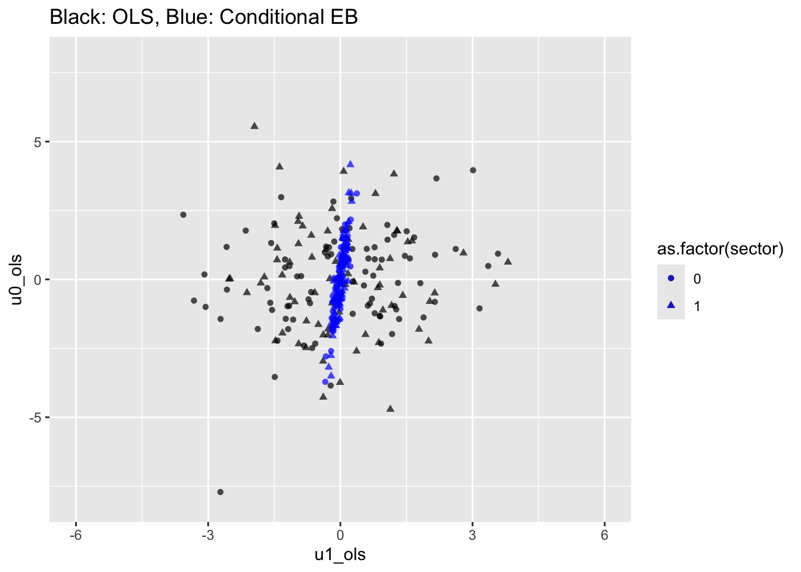
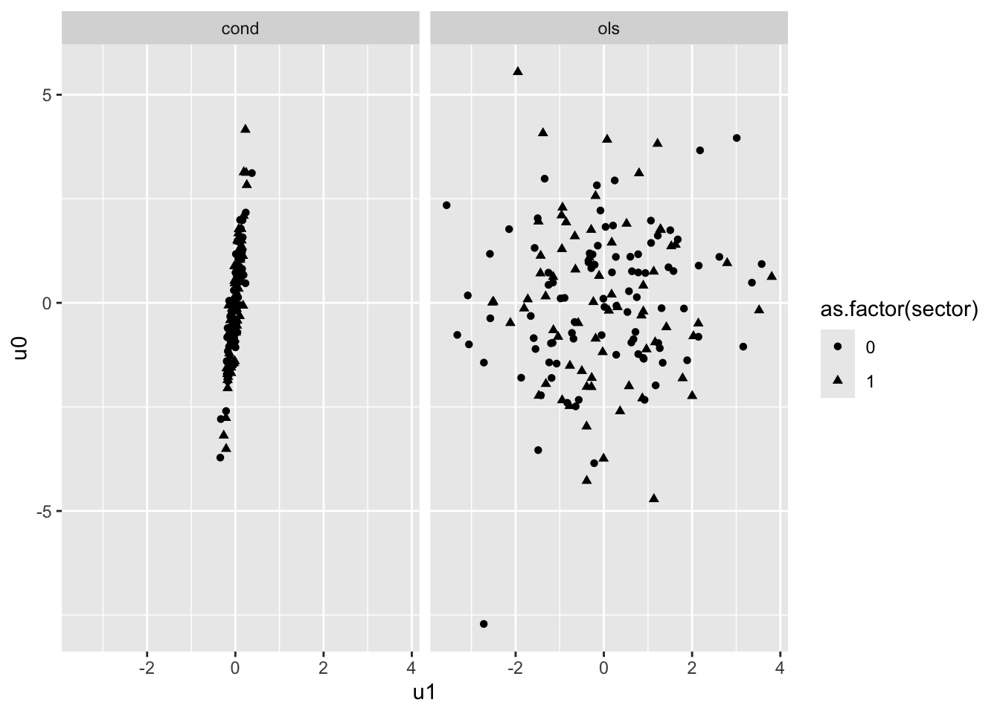

library(foreign) #this lets us read in spss files
library(tidyverse) #this is a broad package that allows us to do lots of data management-y things (and ggplot!)
library(lme4) #this allows us to run MLM
library(arm) #this allows us to display MLM
library( lmerTest ) # this puts p-values on the summary() command for fixed effects39 Code for HSB Example in Chapter 4 of R&B
This script builds everything from Chapter 4 of Raudenbush and Bryk in R. It is a very useful script for getting pretty much all the code you would need for a conventional multilevel analysis. The code is divided by each table or plot from the chapter.
39.1 R Setup
39.2 Load HS&B data
# Read student data
stud.dat = read.spss( "data/hsb1.sav", to.data.frame=TRUE )
# Read in school data
sch.dat = read.spss( "data/hsb2.sav", to.data.frame=TRUE )
# Make single data frame with all variables, keep all students even if they
# don't match to a school
dat = merge( stud.dat, sch.dat, by="id", all.x=TRUE )39.3 Table 4.1 Descriptive summaries
## Get mean and SD of the Level 1 variables, rounded to 2 decimal places
# math achievement
round(mean(dat$mathach),2)[1] 12.75round(sd(dat$mathach),2)[1] 6.88# ses
round(mean(dat$ses),2)[1] 0round(sd(dat$ses),2)[1] 0.78## Get mean and SD of Level 2 variables, round to 2 decimal places
# NOTE: we are getting these from the SCHOOL-LEVEL FILE
# sector
round(mean(sch.dat$sector),2) # this answers "what percent of schools are catholic?"[1] 0.44round(sd(sch.dat$sector),2)[1] 0.5# mean ses
round(mean(sch.dat$meanses),2) # this answers "what is the average of the school-average SES values?"[1] 0round(sd(sch.dat$meanses),2)[1] 0.41# NOTE: if we used the student-level or "dat" file, we would be answering the
# following questions:
# * what percent of students attend a catholic school?
# * what is the average student ses? <- this would match what we calculated
# ourselves if we had the entire school in our sample39.4 Table 4.2: One-Way ANOVA (i.e uncontrolled random intercept)
## Fit the model described
mod4.2 <- lmer(mathach ~ 1 + (1|id), data=dat)
# Peek at the results
display(mod4.2)lmer(formula = mathach ~ 1 + (1 | id), data = dat)
coef.est coef.se
12.64 0.24
Error terms:
Groups Name Std.Dev.
id (Intercept) 2.93
Residual 6.26
---
number of obs: 7185, groups: id, 160
AIC = 47122.8, DIC = 47114.8
deviance = 47115.8 ## Extract the fixed effect coefficient (and it's standard error)
fixef(mod4.2) # extracts the fixed effect coefficient(s)(Intercept)
12.63697 se.coef(mod4.2)$fixef #extracts the standard errors for the fixed effect(s)[1] 0.2443936## Extract the variance components
# Note: in the model display, we see the SDs, not the variance
VarCorr(mod4.2) Groups Name Std.Dev.
id (Intercept) 2.9350
Residual 6.2569 # To get the variances, we extract each part and square it
# variance of random intercept
(sigma.hat(mod4.2)$sigma$id)^2(Intercept)
8.614025 # variance of level 1 residual (easier to extract)
sigma(mod4.2)^2 [1] 39.14832# could also use the more complicated formula that we used with the intercept.
# If we do, we get the same thing
sigma.hat(mod4.2)$sigma$data^2[1] 39.14832# Inference on the need for a random intercept
# Thus uses the book's way of calculating a test statistic with a
# chi-squared distribution.
schools = dat %>% group_by( id ) %>%
summarise( nj = n(),
Y.bar.j = mean( mathach ) )
gamma.00 = fixef( mod4.2 )[[1]]
sigma.2 = sigma(mod4.2)^2
H = sum( schools$nj * (schools$Y.bar.j - gamma.00)^2 / sigma.2 )
H[1] 1660.232# our p-value
pchisq( H, df = nrow( schools ) - 1, lower.tail = FALSE )[1] 4.770612e-248# calculating the ICC
tau.00 = VarCorr(mod4.2)$id[1,1]
rho.hat = tau.00 / (tau.00 + sigma.2 )
rho.hat[1] 0.1803518# Calculating reliability for each school mean. (Here it is purely a function of
# students in the school. More students, more info, and thus more reliable.)
sigma.2 = sigma(mod4.2)^2
tau.00 = VarCorr(mod4.2)$id[1,1]
lambda = tau.00 / ( tau.00 + sigma.2 / schools$nj )
mean( lambda )[1] 0.9013773# A bonus graph of the reliabilities
qplot( lambda )
39.5 Table 4.3 Means as Outcomes Model
# (i.e. random intercept with Level 2 predictor)
## Fit the model described
mod4.3 <- lmer(mathach ~ 1 + meanses + (1|id), data=dat)
# Peek at the results
display(mod4.3)lmer(formula = mathach ~ 1 + meanses + (1 | id), data = dat)
coef.est coef.se
(Intercept) 12.65 0.15
meanses 5.86 0.36
Error terms:
Groups Name Std.Dev.
id (Intercept) 1.62
Residual 6.26
---
number of obs: 7185, groups: id, 160
AIC = 46969.3, DIC = 46956.9
deviance = 46959.1 ## Extract the fixed effect coefficients (and standard errors/t-statistics)
fixef(mod4.3) # extracts the fixed effect coefficients(Intercept) meanses
12.649435 5.863538 # NOTE: you can call them separately by "indexing" them
# just the intercept
fixef(mod4.3)[1](Intercept)
12.64944 # just coefficient on mean ses
fixef(mod4.3)[2] meanses
5.863538 se.coef(mod4.3)$fixef #extracts the standard errors for the fixed effect(s)[1] 0.1492801 0.3614580## Calculate (or extract) the t-ratio (aka the t-statistic)
# NOTE: the author's don't present this for the intercept, because we often
# don't care. But it is presented here for completeness
# tstats for intercept
fixef(mod4.3)[1]/se.coef(mod4.3)$fixef[1](Intercept)
84.73622 # tstat mean ses
fixef(mod4.3)[2]/se.coef(mod4.3)$fixef[2] meanses
16.22191 # tstat extracted - this does both variables at once!
coef(summary(mod4.3))[,"t value"](Intercept) meanses
84.73622 16.22191 # NOTE: Let's look at what is happening here:
coef(summary(mod4.3)) # gives us all the fixed effect statistics we could want Estimate Std. Error df t value Pr(>|t|)
(Intercept) 12.649435 0.1492801 153.7425 84.73622 6.032590e-131
meanses 5.863538 0.3614580 153.4067 16.22191 4.267894e-35# the [ ] is called "indexing" - it's a way of subsetting data by telling R
# which [rows,columns] you want to see we are telling R that we want ALL rows "[
# ," but only the column labeled "t value"
## Extract the variance components
# Note: in the model display, we see the SDs, not the variance
VarCorr(mod4.3) Groups Name Std.Dev.
id (Intercept) 1.6244
Residual 6.2576 # To get the variances, we extract each part and square it
# variance of random intercept
(sigma.hat(mod4.3)$sigma$id)^2(Intercept)
2.638708 # variance of level 1 residual
sigma(mod4.3)^2 [1] 39.15708# Range of plausible values for school means for schools with mean SES of 0:
# See page 73-74)
fixef( mod4.3 )[[1]] + c(-1.96, 1.96) * (sigma.hat(mod4.3)$sigma$id)[1] 9.465592 15.833279# Compare to our model without mean ses
fixef( mod4.2 )[[1]] + c(-1.96, 1.96) * (sigma.hat(mod4.2)$sigma$id)[1] 6.884441 18.389507# Proportion reduction in variance or "variance explained" at level 2
tau.00.anova = (sigma.hat(mod4.2)$sigma$id)^2
tau.00.meanses = (sigma.hat(mod4.3)$sigma$id)^2
(tau.00.anova-tau.00.meanses) / tau.00.anova(Intercept)
0.693673 ## Inference on the random effects
schools = merge( schools, sch.dat, by="id" )
gamma.00 = fixef( mod4.3 )[[1]]
gamma.01 = fixef( mod4.3 )[[2]]
schools = mutate( schools, resid = Y.bar.j - gamma.00 - gamma.01*meanses )
H = sum( schools$nj * schools$resid^2 ) / sigma(mod4.3)^2
H[1] 633.5175pchisq( H, nrow( schools ) - 2, lower.tail = FALSE )[1] 3.617696e-58## Reliability revisited (from pg 75)
mod4.3Linear mixed model fit by REML ['lmerModLmerTest']
Formula: mathach ~ 1 + meanses + (1 | id)
Data: dat
REML criterion at convergence: 46961.28
Random effects:
Groups Name Std.Dev.
id (Intercept) 1.624
Residual 6.258
Number of obs: 7185, groups: id, 160
Fixed Effects:
(Intercept) meanses
12.649 5.864 u.hat = coef( mod4.3 )$id
head( u.hat ) (Intercept) meanses
1224 12.32688 5.863538
1288 12.71898 5.863538
1296 10.70101 5.863538
1308 12.92208 5.863538
1317 11.48086 5.863538
1358 11.73878 5.863538sigma.2 = sigma(mod4.3)^2
tau.00 = VarCorr(mod4.3)$id[1,1]
sigma.2[1] 39.15708tau.00[1] 2.638708# These are the individual reliabilities---how well we can separate schools with the same Mean SES
# (So it is _conditional_ on the mean SES of the schools.)
lambda.j = tau.00 / (tau.00 + (sigma.2 / schools$nj))
mean( lambda.j )[1] 0.740074739.6 Table 4.4 Random coefficient model (i.e. random slope)
# group-mean center ses
dat <- dat %>% group_by( id ) %>%
mutate( ses_grpcenter = ses - mean(ses) )
## Fit the model described
mod4.4 <- lmer(mathach ~ 1 + ses_grpcenter + ( 1 + ses_grpcenter | id ), data=dat)
# Peek at the results
display(mod4.4)lmer(formula = mathach ~ 1 + ses_grpcenter + (1 + ses_grpcenter |
id), data = dat)
coef.est coef.se
(Intercept) 12.64 0.24
ses_grpcenter 2.19 0.13
Error terms:
Groups Name Std.Dev. Corr
id (Intercept) 2.95
ses_grpcenter 0.83 0.02
Residual 6.06
---
number of obs: 7185, groups: id, 160
AIC = 46726.2, DIC = 46707.7
deviance = 46711.0 ## Extract the fixed effect coefficients (and standard errors/t-statistics)
coef(summary(mod4.4)) #this reproduces the whole first panel, though methods used above also work Estimate Std. Error df t value Pr(>|t|)
(Intercept) 12.636193 0.2445047 156.7512 51.68077 2.286893e-100
ses_grpcenter 2.193196 0.1282589 155.2166 17.09976 1.582355e-37## Extract the variance components
# Note: in the model display, we see the SDs, not the variance
VarCorr(mod4.4) Groups Name Std.Dev. Corr
id (Intercept) 2.94636
ses_grpcenter 0.83307 0.019
Residual 6.05807 # variance of random effects
(sigma.hat(mod4.4)$sigma$id)^2 (Intercept) ses_grpcenter
8.6810437 0.6939974 # NOTE: to extract one or the other, you can use indexing
(sigma.hat(mod4.4)$sigma$id[1])^2 #this is just the intercept random effect(Intercept)
8.681044 # variance of level 1 residual
sigma(mod4.4)^2[1] 36.7001939.7 Table 4.5 Intercepts and Slopes as Outcomes Model
## Fit the model described
mod4.5 <- lmer(mathach ~ 1 + meanses + sector + ses_grpcenter*(meanses + sector) + ( 1 + ses_grpcenter | id ), data=dat)
# NOTE: The code above allows the coefficients to appear in the same order as in Table 4.5
# R automatically includes the main effects, so this model can be written more
# concisely as shown below:
#
# lmer(mathach ~ 1 + ses_grpcenter*(meanses + sector) + ( 1 + ses_grpcenter | id ), data=dat)
# Peek at the results
display(mod4.5)lmer(formula = mathach ~ 1 + meanses + sector + ses_grpcenter *
(meanses + sector) + (1 + ses_grpcenter | id), data = dat)
coef.est coef.se
(Intercept) 12.10 0.20
meanses 5.33 0.37
sector 1.23 0.31
ses_grpcenter 2.94 0.16
meanses:ses_grpcenter 1.04 0.30
sector:ses_grpcenter -1.64 0.24
Error terms:
Groups Name Std.Dev. Corr
id (Intercept) 1.54
ses_grpcenter 0.32 0.39
Residual 6.06
---
number of obs: 7185, groups: id, 160
AIC = 46523.7, DIC = 46489.2
deviance = 46496.4 ## Extract the fixed effect coefficients (and standard errors/t-statistics)
#this reproduces the whole first panel, though methods used above also work
coef(summary(mod4.5)) Estimate Std. Error df t value Pr(>|t|)
(Intercept) 12.095997 0.1987329 159.9143 60.865590 1.625101e-112
meanses 5.332898 0.3691567 150.9836 14.446161 2.944282e-30
sector 1.226453 0.3062674 149.6139 4.004518 9.756638e-05
ses_grpcenter 2.938785 0.1550889 139.2934 18.949039 2.197507e-40
meanses:ses_grpcenter 1.038918 0.2988941 160.5428 3.475873 6.550388e-04
sector:ses_grpcenter -1.642619 0.2397854 143.3351 -6.850371 2.009493e-10# NOTE: there is a slight descrepancy in the estimate for meanses:ses_grpcenter and
# the t-statistics for meanses:ses_grpcenter and sector:ses_grpcenter; nothing that
# changes the interpretations, however.
# Testing the need for sector (see page 82)
# (We use a likelihood ratio test with the anova() function)
mod4.5.null <- lmer(mathach ~ 1 + meanses + ses_grpcenter*(meanses) + ( 1 + ses_grpcenter | id ), data=dat)
anova( mod4.5, mod4.5.null )Data: dat
Models:
mod4.5.null: mathach ~ 1 + meanses + ses_grpcenter * (meanses) + (1 + ses_grpcenter | id)
mod4.5: mathach ~ 1 + meanses + sector + ses_grpcenter * (meanses + sector) + (1 + ses_grpcenter | id)
npar AIC BIC logLik deviance Chisq Df Pr(>Chisq)
mod4.5.null 8 46568 46623 -23276 46552
mod4.5 10 46516 46585 -23248 46496 55.941 2 7.122e-13 ***
---
Signif. codes: 0 '***' 0.001 '**' 0.01 '*' 0.05 '.' 0.1 ' ' 1# Testing the need for random slope (see page 84)
# (We use a likelihood ratio test with the anova() function)
mod4.5.null.slope <- lmer(mathach ~ 1 + meanses + sector + ses_grpcenter*(meanses + sector) + ( 1 | id ), data=dat)
anova( mod4.5, mod4.5.null.slope )Data: dat
Models:
mod4.5.null.slope: mathach ~ 1 + meanses + sector + ses_grpcenter * (meanses + sector) + (1 | id)
mod4.5: mathach ~ 1 + meanses + sector + ses_grpcenter * (meanses + sector) + (1 + ses_grpcenter | id)
npar AIC BIC logLik deviance Chisq Df Pr(>Chisq)
mod4.5.null.slope 8 46513 46568 -23249 46497
mod4.5 10 46516 46585 -23248 46496 1.0039 2 0.605439.8 Figure 4.1
NOTE: Figure 4.1 is a graphical display using the results from Model/Table 4.5
The solid line represents the slope of the gamma-01 coefficient; this is the same in public and catholic schools. The dotted lines represent the the slope for individual schools with “prototypical” values of meanses (-1,0,1 standard deviations from mean)
# to calculate this, we should note a few values:
avg_meanses <- mean(dat$meanses) #average of mean ses var
high_meanses <- mean(dat$meanses) + sd(dat$meanses) # 1 sd above avg meanses
low_meanses <- mean(dat$meanses) - sd(dat$meanses) # 1 sd below avg meanses
fake.students = expand.grid( id = -1,
meanses = c( low_meanses, avg_meanses, high_meanses ),
sector = c( 0, 1 ),
ses_grpcenter = c( -1, 0, 1 ) )
fake.students = mutate( fake.students, ses = meanses + ses_grpcenter )
fake.students$mathach = predict( mod4.5, newdata=fake.students, allow.new.levels = TRUE )
fake.schools = filter( fake.students, ses_grpcenter == 0 )
ggplot( fake.students, aes( ses, mathach ) ) +
facet_wrap( ~ sector ) +
geom_line( aes( group=meanses ), lty = 2 ) +
geom_line( data=fake.schools, aes( x = ses, y = mathach ) ) +
geom_point( data=fake.schools, aes( x = ses, y = mathach ) )
39.9 Set-up for remaining tables/figures of chapter
In order to create table 4.6 and the following 2 graphs, we will need to prepare a new dataset. These next lines of code do that.
## Start with school level data frame and keep variables interesting to our model comparison
mod.comp <- dplyr::select( sch.dat, id, meanses, sector )
## Add in number of observations per school
n_j <- dat %>% group_by( id ) %>%
dplyr::summarise(n_j = n())
mod.comp <- merge(mod.comp, n_j, by="id")
head( mod.comp ) id meanses sector n_j
1 1224 -0.428 0 47
2 1288 0.128 0 25
3 1296 -0.420 0 48
4 1308 0.534 1 20
5 1317 0.351 1 48
6 1358 -0.014 0 30## Run site-specific OLS for each school and save estimates
# Calculate global (not group) centered ses
dat$ses_centered <- dat$ses - mean(dat$ses)
# This is the "for loop" method of generating an estimate for each of many small
# worlds (schools). See lecture 2.3 code for the "tidyverse" way.
est.ols <- matrix(nrow=160,ncol=2) #create a matrix to store estimates
se.ols <- matrix(nrow=160,ncol=2) #create matrix to store standard errors
for (i in 1:length(unique(dat$id))){ #looping across the 160 different values of id
id <- unique(dat$id)[i] #pick the value of id we want
mod <- lm(mathach ~ 1 + ses_grpcenter, data=dat[dat$id==id,]) #run the model on students in that 1 school
est.ols[i,] <- coef( mod ) #save the setimates in the matrix we created
se.ols[i,] <- se.coef( mod ) # and the SEs
}
#convert the matrix to a dataframe and attach the schoolid info
est.ols <- as.data.frame(est.ols)
est.ols$id <- sch.dat$id
names(est.ols) <- c( 'b0_ols', 'b1_ols', 'id' )
#store standard errors for later
se.ols <- as.data.frame(se.ols)
se.ols$id <- sch.dat$id
names(se.ols) <- c( 'se_b0_ols', 'se_b1_ols', 'id' )
mod.comp <- merge(mod.comp, est.ols, by='id')
mod.comp <- merge(mod.comp, se.ols, by='id' )
head( mod.comp ) id meanses sector n_j b0_ols b1_ols se_b0_ols se_b1_ols
1 1224 -0.428 0 47 9.715447 2.5085817 1.0954478 1.765216
2 1288 0.128 0 25 13.510800 3.2554487 1.3637656 2.079675
3 1296 -0.420 0 48 7.635958 1.0759591 0.7740752 1.209016
4 1308 0.534 1 20 16.255500 0.1260242 1.4045813 3.003437
5 1317 0.351 1 48 13.177688 1.2739128 0.7902486 1.435942
6 1358 -0.014 0 30 11.206233 5.0680087 0.8994345 1.391550# We are done running OLS on each of our schools and storing the results.
## Extract site-specific coefficients from "unconditional model" (model 4.4)
est4.4 <- coef(mod4.4)$id
names(est4.4) <- c('b0_uncond', 'b1_uncond') #rename
est4.4$id = rownames( est4.4 )
## Extract site-specific coefficients from the "conditional model" (model 4.5)
est4.5 <- coef(mod4.5)$id
head( est4.5 ) (Intercept) meanses sector ses_grpcenter meanses:ses_grpcenter
1224 12.02263 5.332898 1.226453 2.933689 1.038918
1288 12.55180 5.332898 1.226453 2.979174 1.038918
1296 10.38509 5.332898 1.226453 2.744066 1.038918
1308 12.12710 5.332898 1.226453 2.923822 1.038918
1317 10.56530 5.332898 1.226453 2.806582 1.038918
1358 11.60500 5.332898 1.226453 2.961265 1.038918
sector:ses_grpcenter
1224 -1.642619
1288 -1.642619
1296 -1.642619
1308 -1.642619
1317 -1.642619
1358 -1.642619est4.5$id = rownames( est4.5 )
# Now we need to calculate the point estimates using our individual regression equations
# including our level-2 values for each school
# (This is a bit of a pain.)
est4.5 = merge( est4.5, mod.comp, by="id", suffixes = c( "", ".v" ) )
head( est4.5 ) id (Intercept) meanses sector ses_grpcenter meanses:ses_grpcenter
1 1224 12.02263 5.332898 1.226453 2.933689 1.038918
2 1288 12.55180 5.332898 1.226453 2.979174 1.038918
3 1296 10.38509 5.332898 1.226453 2.744066 1.038918
4 1308 12.12710 5.332898 1.226453 2.923822 1.038918
5 1317 10.56530 5.332898 1.226453 2.806582 1.038918
6 1358 11.60500 5.332898 1.226453 2.961265 1.038918
sector:ses_grpcenter meanses.v sector.v n_j b0_ols b1_ols se_b0_ols
1 -1.642619 -0.428 0 47 9.715447 2.5085817 1.0954478
2 -1.642619 0.128 0 25 13.510800 3.2554487 1.3637656
3 -1.642619 -0.420 0 48 7.635958 1.0759591 0.7740752
4 -1.642619 0.534 1 20 16.255500 0.1260242 1.4045813
5 -1.642619 0.351 1 48 13.177688 1.2739128 0.7902486
6 -1.642619 -0.014 0 30 11.206233 5.0680087 0.8994345
se_b1_ols
1 1.765216
2 2.079675
3 1.209016
4 3.003437
5 1.435942
6 1.391550est4.5 = mutate( est4.5,
b0_cond = `(Intercept)` + sector * sector.v + meanses * meanses.v,
b1_cond = ses_grpcenter + `sector:ses_grpcenter` * sector.v + `meanses:ses_grpcenter` * meanses.v )
est4.5 = dplyr::select( est4.5, id, b0_cond, b1_cond )
## Combine the MLM estimates into 1 dataset with ids
est.mlm <- merge( est4.4, est4.5, by="id" )
# Merge all the estimates together by school id
mod.comp <- merge(mod.comp,est.mlm,by = 'id',all=TRUE)
head( mod.comp ) id meanses sector n_j b0_ols b1_ols se_b0_ols se_b1_ols b0_uncond
1 1224 -0.428 0 47 9.715447 2.5085817 1.0954478 1.765216 9.956953
2 1288 0.128 0 25 13.510800 3.2554487 1.3637656 2.079675 13.386036
3 1296 -0.420 0 48 7.635958 1.0759591 0.7740752 1.209016 8.039091
4 1308 0.534 1 20 16.255500 0.1260242 1.4045813 3.003437 15.622073
5 1317 0.351 1 48 13.177688 1.2739128 0.7902486 1.435942 13.132771
6 1358 -0.014 0 30 11.206233 5.0680087 0.8994345 1.391550 11.387452
b1_uncond b0_cond b1_cond
1 2.262837 9.740146 2.489033
2 2.375964 13.234409 3.112156
3 1.872247 8.145275 2.307720
4 2.050193 16.201317 1.835985
5 1.997129 13.663596 1.528623
6 2.738390 11.530341 2.94672139.10 Table 4.6 Comparing site-specific estimates from different models
## Create the list of rows that B&R include in the table p. 87
keeprows <- c(4, 15, 17, 22, 27, 53, 69, 75, 81, 90, 135, 153)
## Limit data to the rows of interest, and print the columns in Table 4.6 in the correct order
tab4.6 <- mod.comp[keeprows, c('b0_ols','b1_ols','b0_uncond','b1_uncond','b0_cond','b1_cond','n_j','meanses','sector') ]
## Print Table 4.6 -- the Empirical Bayes from conditional model (b0_cond, b1_cond) are waaaaaay off
round(tab4.6,2) b0_ols b1_ols b0_uncond b1_uncond b0_cond b1_cond n_j meanses sector
4 16.26 0.13 15.62 2.05 16.20 1.84 20 0.53 1
15 15.98 2.15 15.74 2.19 16.01 1.84 53 0.52 1
17 18.11 0.09 17.41 1.95 17.25 3.71 29 0.69 0
22 11.14 -0.78 11.22 1.15 10.89 0.63 67 -0.62 1
27 13.40 4.10 13.32 2.54 12.95 3.00 38 -0.06 0
53 9.52 3.74 9.76 2.75 9.37 2.42 51 -0.64 0
69 11.47 6.18 11.64 2.72 11.92 3.03 25 0.08 0
75 9.06 1.65 9.28 2.01 9.30 0.67 63 -0.59 1
81 15.42 5.26 15.25 3.14 15.53 1.91 66 0.43 1
90 12.14 1.97 12.18 2.14 12.34 3.03 50 0.19 0
135 4.55 0.25 6.42 1.92 8.55 2.63 14 0.03 0
153 10.28 0.76 10.71 2.06 9.67 2.37 19 -0.59 039.11 Figure 4.2 : Scatter plots of the estimates from 2 unconstrained models
## Panel (a) and Panel (b) are plotted on the same graph
ggplot(data=mod.comp,aes()) +
geom_point(aes(x=b1_ols,y=b0_ols),color='black',alpha=0.7) +
geom_point(aes(x=b1_uncond,y=b0_uncond),color='blue',alpha=0.7) +
labs(title="Black=OLS; Blue=Unconditional EB") +
xlim(-5,8) + ylim(2,20)
39.12 Figure 4.3 : Scatter plots of residuals from the OLS & Constrained MLM model
## Luke: Equation 4.271 and 4.27b (p. 92) are allegedly how we calculate the intercept and slope residuals
## But I'm not sure where the estimates for the gamma-hat terms come from; the OLS model only includes
## individual-level ses
# trying it here with the predictions from conditional EB
fes = fixef( mod4.5 )
fes (Intercept) meanses sector
12.095997 5.332898 1.226453
ses_grpcenter meanses:ses_grpcenter sector:ses_grpcenter
2.938785 1.038918 -1.642619 mod.comp = mutate( mod.comp,
u0_ols = b0_ols - (fes[1] + fes[2]*meanses + fes[3]*sector),
u1_ols = b1_ols - (fes[4] + fes[5]*meanses + fes[6]*sector) )
## Panel (a) and (b) plotted on same graph
mod.comp = mutate( mod.comp,
u0_cond = b0_cond - (fes[1] + fes[2]*meanses + fes[3]*sector),
u1_cond = b1_cond - (fes[4] + fes[5]*meanses + fes[6]*sector) )
head( mod.comp ) id meanses sector n_j b0_ols b1_ols se_b0_ols se_b1_ols b0_uncond
1 1224 -0.428 0 47 9.715447 2.5085817 1.0954478 1.765216 9.956953
2 1288 0.128 0 25 13.510800 3.2554487 1.3637656 2.079675 13.386036
3 1296 -0.420 0 48 7.635958 1.0759591 0.7740752 1.209016 8.039091
4 1308 0.534 1 20 16.255500 0.1260242 1.4045813 3.003437 15.622073
5 1317 0.351 1 48 13.177688 1.2739128 0.7902486 1.435942 13.132771
6 1358 -0.014 0 30 11.206233 5.0680087 0.8994345 1.391550 11.387452
b1_uncond b0_cond b1_cond u0_ols u1_ols u0_cond u1_cond
1 2.262837 9.740146 2.489033 -0.09807014 0.01445354 -0.07337107 -0.005095579
2 2.375964 13.234409 3.112156 0.73219201 0.18368221 0.45580075 0.040389349
3 1.872247 8.145275 2.307720 -2.22022179 -1.42648036 -1.71090544 -0.194719195
4 2.050193 16.201317 1.835985 0.08528223 -1.72492410 0.03109939 -0.014963432
5 1.997129 13.663596 1.528623 -2.01661001 -0.38691354 -1.53070178 -0.132203129
6 2.738390 11.530341 2.946721 -0.81510320 2.14376861 -0.49099553 0.022480378nrow( mod.comp )[1] 160ggplot(data=mod.comp, aes( pch=as.factor(sector)) ) +
geom_point(aes(x=u1_ols, y=u0_ols),color='black', alpha=0.7) +
geom_point(aes(x=u1_cond, y=u0_cond),color='blue', alpha=0.7) +
labs(title = "Black: OLS, Blue: Conditional EB") +
xlim(-6,6) + ylim(-8,8)
# To get in two-panel format we need to get our data to long format
mod.comp.ols = data.frame( sector = mod.comp$sector,
u0 = mod.comp$u0_ols,
u1 = mod.comp$u1_ols )
mod.comp.EB = data.frame( sector = mod.comp$sector,
u0 = mod.comp$u0_cond,
u1 = mod.comp$u1_cond )
mod.comp.l = bind_rows( ols=mod.comp.ols, cond = mod.comp.EB, .id = "method" )
ggplot(data=mod.comp.l, aes( u1, u0, pch=as.factor(sector)) ) +
facet_wrap( ~ method ) +
geom_point()
39.13 Table 4.7 : pg 94
# This section is not very good--I would skip.
# Generating confidence intervals for individual random intercepts and slopes is a weird business.
# OLS First:
# Doing it by fitting OLS on our subset
sch.2305 = filter( dat, id == 2305 )
head( sch.2305 )# A tibble: 6 × 13
# Groups: id [1]
id minority female ses mathach size sector pracad disclim himinty
<chr> <dbl> <dbl> <dbl> <dbl> <dbl> <dbl> <dbl> <dbl> <dbl>
1 2305 1 1 -0.738 16.4 485 1 0.69 -1.38 1
2 2305 1 1 -1.18 12.8 485 1 0.69 -1.38 1
3 2305 1 1 -0.308 15.3 485 1 0.69 -1.38 1
4 2305 1 1 -0.358 12.7 485 1 0.69 -1.38 1
5 2305 1 1 -1.52 10.2 485 1 0.69 -1.38 1
6 2305 1 1 -0.518 8.94 485 1 0.69 -1.38 1
# ℹ 3 more variables: meanses <dbl>, ses_grpcenter <dbl>, ses_centered <dbl>M.2305 = lm( mathach ~ ses_grpcenter, data=sch.2305 )
M.2305
Call:
lm(formula = mathach ~ ses_grpcenter, data = sch.2305)
Coefficients:
(Intercept) ses_grpcenter
11.1378 -0.7821 confint( M.2305 ) 2.5 % 97.5 %
(Intercept) 9.911824 12.363698
ses_grpcenter -2.665989 1.101767sch.8367 = filter( dat, id == 8367 )
head( sch.8367 )# A tibble: 6 × 13
# Groups: id [1]
id minority female ses mathach size sector pracad disclim himinty
<chr> <dbl> <dbl> <dbl> <dbl> <dbl> <dbl> <dbl> <dbl> <dbl>
1 8367 0 0 -0.228 15.9 153 0 0 1.79 0
2 8367 0 1 -0.208 1.86 153 0 0 1.79 0
3 8367 1 0 0.532 -2.83 153 0 0 1.79 0
4 8367 0 1 0.662 2.12 153 0 0 1.79 0
5 8367 0 0 -0.228 6.76 153 0 0 1.79 0
6 8367 0 0 -1.08 0.725 153 0 0 1.79 0
# ℹ 3 more variables: meanses <dbl>, ses_grpcenter <dbl>, ses_centered <dbl>M.8367 = lm( mathach ~ ses_grpcenter, data=sch.8367 )
M.8367
Call:
lm(formula = mathach ~ ses_grpcenter, data = sch.8367)
Coefficients:
(Intercept) ses_grpcenter
4.5528 0.2504 confint( M.8367 ) 2.5 % 97.5 %
(Intercept) 1.872974 7.232598
ses_grpcenter -3.431096 3.931845# Use SE from earlier to get confint
est4.7 <- mod.comp[c(22,135),]
est4.7 id meanses sector n_j b0_ols b1_ols se_b0_ols se_b1_ols b0_uncond
22 2305 -0.622 1 67 11.137761 -0.7821112 0.6138468 0.943289 11.222551
135 8367 0.032 0 14 4.552786 0.2503748 1.2299413 1.689668 6.423938
b1_uncond b0_cond b1_cond u0_ols u1_ols u0_cond u1_cond
22 1.149555 10.886600 0.6276417 1.132373 -1.432070 0.8812116 -0.02231763
135 1.924903 8.549007 2.6307047 -7.713864 -2.721656 -3.7176433 -0.34132569# CI for intercept and slope using our normal and stored SEs.
# (Not taking t distribution into account changes things, as does not
# taking the uncertainty in the fixed effects for the EB CIs. So this is
# very approximate.)
se_uncond = as.data.frame( se.coef(mod4.4)$id )
head( se_uncond ) (Intercept) ses_grpcenter
1224 0.8464092 0.7189592
1288 1.1205609 0.7593421
1296 0.8382669 0.7111100
1308 1.2307722 0.8005012
1317 0.8382675 0.7377054
1358 1.0354852 0.7489241names( se_uncond ) = c("se_b0_uncond","se_b1_uncond" )
se_cond = as.data.frame( se.coef( mod4.5 )$id )
names( se_cond ) = c("se_b0_cond","se_b1_cond" )
head( se_cond ) se_b0_cond se_b1_cond
1224 0.7662313 0.2929654
1288 0.9521965 0.2988437
1296 0.7601221 0.2923332
1308 1.0176181 0.3025414
1317 0.7603073 0.2940970
1358 0.8982481 0.2971694se_uncond$id = rownames( se_uncond )
se_cond$id = rownames( se_cond )
est4.7 = merge( est4.7, se_uncond, by="id" )
est4.7 = merge( est4.7, se_cond, by="id" )
est4.7.int = mutate( est4.7,
CI.low.ols = b0_ols + - 1.96 * se_b0_ols,
CI.high.ols = b0_ols + 1.96 * se_b0_ols,
CI.low.uncond = b0_uncond + - 1.96 * se_b0_uncond,
CI.high.uncond = b0_uncond + 1.96 * se_b0_uncond,
CI.low.cond = b0_cond + - 1.96 * se_b0_cond,
CI.high.cond = b0_cond + 1.96 * se_b0_cond )
dplyr::select( est4.7.int, starts_with("CI" ) ) CI.low.ols CI.high.ols CI.low.uncond CI.high.uncond CI.low.cond CI.high.cond
1 9.934621 12.340901 9.815648 12.629455 9.579800 12.19340
2 2.142101 6.963471 3.642797 9.205078 6.361492 10.73652est4.7.slope = mutate( est4.7,
CI.low.ols = b1_ols + - 1.96 * se_b1_ols,
CI.high.ols = b1_ols + 1.96 * se_b1_ols,
CI.low.uncond = b1_uncond + - 1.96 * se_b1_uncond,
CI.high.uncond = b1_uncond + 1.96 * se_b1_uncond,
CI.low.cond = b1_cond + - 1.96 * se_b1_cond,
CI.high.cond = b1_cond + 1.96 * se_b1_cond )
dplyr::select( est4.7.slope, starts_with("CI" ) ) CI.low.ols CI.high.ols CI.low.uncond CI.high.uncond CI.low.cond CI.high.cond
1 -2.630958 1.066735 -0.1675367 2.466647 0.0629627 1.192321
2 -3.061375 3.562124 0.3960110 3.453795 2.0356645 3.225745